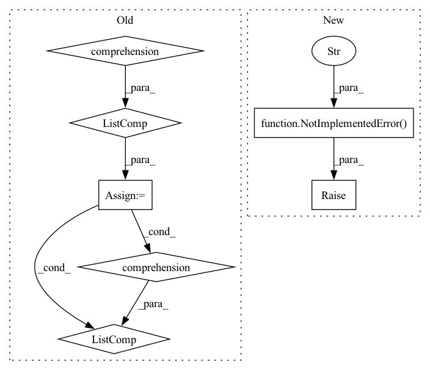

Pattern ID :6454
Before Change
def predict_minibatch(self, inputs):
Predict on a single minibatch of examples.
model_inputs = [self.preprocess(ex) for ex in inputs]
outputs = self.model.predict_minibatch(model_inputs)
return [utils.remap_dict(mo, self.FIELD_RENAMES) for mo in outputs]
def input_spec(self):
spec = lit_types.remap_spec(self.model.input_spec(), self.FIELD_RENAMES)
spec["source_language"] = lit_types.CategoryLabel()After Change
raise NotImplementedError("Use predict() instead.")
def predict_minibatch(self, inputs):
raise NotImplementedError("Use predict() instead." )
def predict(self, inputs):
Predict on a single minibatch of examples.
model_inputs = (self.preprocess(ex) for ex in inputs)In pattern: SUPERPATTERN
Frequency: 3
Non-data size: 7
Instances Fragment ID: 22357829
Project Name: pair-code/lit
Commit Name: e8c43368b742001e02f0181752f735baea98f0aa
Time: 2021-06-10
Author: iftenney@google.com
File Name: lit_nlp/examples/models/t5.py
M Class Name: TranslationWrapper
N Class Name: TranslationWrapper
M Method Name: predict_minibatch(2)
N Method Name: predict_minibatch(2)
M Parent Class: lit_model.Model
N Parent Class: lit_model.Model
M File Name: lit_nlp/examples/models/t5.py
N File Name: lit_nlp/examples/models/t5.py
M Start Line: 363
M End Line: 365
N Start Line: 363
N End Line: 363
Before Change
used_by_send_depth_diff = [my_depth - x for x in used_by_depth]
else:
used_by = tgt["created_by"]
used_by_depth = [stage_to_depth[x] for x in used_by]
used_by_send_depth_diff = [x - my_depth for x in used_by_depth]
if used_by_send_depth_diff:
stage_max_send_depth = max(used_by_send_depth_diff)
else:After Change
created_by = tgt["created_by"]
assert isinstance(created_by, int)
if created_by == -1:
raise NotImplementedError(
f"we assume model_inputs do not require grad. But got: {name}, {stage_id}" )
else:
created_by_depth = stage_to_depth[created_by]
used_by_send_depth_diff = [created_by_depth - my_depth] Fragment ID: 22357828
Project Name: saareliad/ftpipe
Commit Name: 72f9f4e90ae31e899648c9f7699f662adb759088
Time: 2020-09-19
Author: saareliad@campus.technion.ac.il
File Name: models/simple_partitioning_config.py
M Class Name: PipelineConfig
N Class Name: PipelineConfig
M Method Name: max_send_depth_dict(2)
N Method Name: max_send_depth_dict(2)
M Parent Class:
N Parent Class:
M File Name: models/simple_partitioning_config.py
N File Name: models/simple_partitioning_config.py
M Start Line: 187
M End Line: 212
N Start Line: 187
N End Line: 219
Before Change
def predict_minibatch(self, inputs):
Predict on a single minibatch of examples.
model_inputs = [self.preprocess(ex) for ex in inputs]
outputs = self.model.predict_minibatch(model_inputs)
outputs = [utils.remap_dict(mo, self.FIELD_RENAMES) for mo in outputs]
// TODO(gehrmann): temp solution to get ROUGE scores in data table.
for ex, mo in zip(inputs, outputs):
score = self._scorer.score(After Change
raise NotImplementedError("Use predict() instead.")
def predict_minibatch(self, inputs):
raise NotImplementedError("Use predict() instead." )
def predict(self, inputs):
Predict on a single minibatch of examples.
inputs = list(inputs) // needs to be referenced below, so keep full list Fragment ID: 22357830
Project Name: pair-code/lit
Commit Name: e8c43368b742001e02f0181752f735baea98f0aa
Time: 2021-06-10
Author: iftenney@google.com
File Name: lit_nlp/examples/models/t5.py
M Class Name: SummarizationWrapper
N Class Name: SummarizationWrapper
M Method Name: predict_minibatch(2)
N Method Name: predict_minibatch(2)
M Parent Class: lit_model.Model
N Parent Class: lit_model.Model
M File Name: lit_nlp/examples/models/t5.py
N File Name: lit_nlp/examples/models/t5.py
M Start Line: 414
M End Line: 424
N Start Line: 418
N End Line: 418